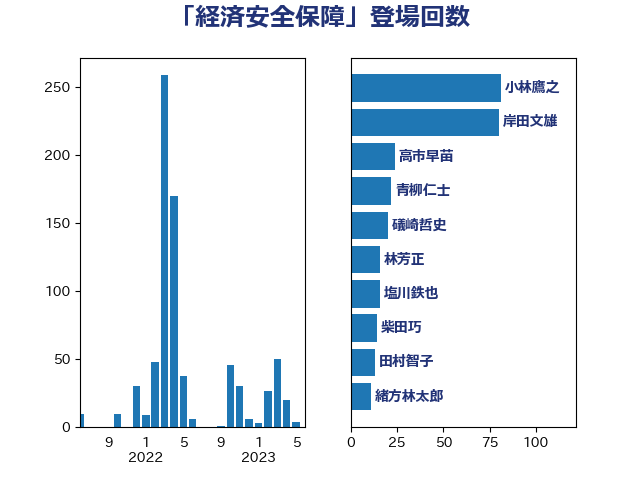

単語「経済安全保障」

| 小林鷹之 | 自由民主党 | 81 回 |
| 岸田文雄 | 自由民主党 | 80 回 |
| 高市早苗 | 自由民主党 | 24 回 |
| 青柳仁士 | 日本維新の会 | 22 回 |
| 礒崎哲史 | 国民民主党 | 20 回 |
| 林芳正 | 自由民主党 | 16 回 |
| 塩川鉄也 | 日本共産党 | 16 回 |
| 柴田巧 | 日本維新の会 | 14 回 |
| 田村智子 | 日本共産党 | 13 回 |
| 緒方林太郎 | 無所属 | 11 回 |
| 本庄知史 | 立憲民主党 | 11 回 |
| 萩生田光一 | 自由民主党 | 9 回 |
| 三浦信祐 | 公明党 | 9 回 |
| 浅野哲 | 国民民主党 | 8 回 |
| 山岸一生 | 立憲民主党 | 8 回 |
| 大串博志 | 立憲民主党 | 8 回 |
| 上田清司 | 国民民主党 | 8 回 |
| 阿部司 | 日本維新の会 | 7 回 |
| 足立康史 | 日本維新の会 | 7 回 |
| 小山展弘 | 立憲民主党 | 7 回 |
| 太栄志 | 立憲民主党 | 7 回 |
| 吉良州司 | 無所属 | 7 回 |
| 西村康稔 | 自由民主党 | 6 回 |
| 松本剛明 | 自由民主党 | 6 回 |
| 山際大志郎 | 自由民主党 | 6 回 |
| 小野泰輔 | 日本維新の会 | 6 回 |
| 大石あきこ | れいわ新選組 | 6 回 |
| 堀場幸子 | 日本維新の会 | 6 回 |
| 音喜多駿 | 日本維新の会 | 5 回 |
| 笠井亮 | 日本共産党 | 5 回 |
| 山谷えり子 | 自由民主党 | 5 回 |
| 有村治子 | 自由民主党 | 4 回 |
| 山口俊一 | 自由民主党 | 4 回 |
| 小沼巧 | 立憲民主党 | 4 回 |
| 高木啓 | 自由民主党 | 3 回 |
| 阿達雅志 | 自由民主党 | 3 回 |
| 西岡秀子 | 国民民主党 | 3 回 |
| 田村まみ | 国民民主党 | 3 回 |
| 玉木雄一郎 | 国民民主党 | 3 回 |
| 櫻井周 | 立憲民主党 | 3 回 |
| 根本匠 | 自由民主党 | 3 回 |
| 斉藤鉄夫 | 公明党 | 3 回 |
| 山本香苗 | 公明党 | 3 回 |
| 太田房江 | 自由民主党 | 3 回 |
| 大西英男 | 自由民主党 | 3 回 |
| 塩田博昭 | 公明党 | 3 回 |
| 井上信治 | 自由民主党 | 3 回 |
| 上野賢一郎 | 自由民主党 | 3 回 |
| 三宅伸吾 | 自由民主党 | 3 回 |
| 齋藤健 | 自由民主党 | 2 回 |
| 高木かおり | 日本維新の会 | 2 回 |
| 馬場伸幸 | 日本維新の会 | 2 回 |
| 青山繁晴 | 自由民主党 | 2 回 |
| 赤池誠章 | 自由民主党 | 2 回 |
| 細田博之 | 自由民主党 | 2 回 |
| 石川大我 | 立憲民主党 | 2 回 |
| 石原正敬 | 自由民主党 | 2 回 |
| 甘利明 | 自由民主党 | 2 回 |
| 片山さつき | 自由民主党 | 2 回 |
| 河西宏一 | 公明党 | 2 回 |
| 永岡桂子 | 自由民主党 | 2 回 |
| 東徹 | 日本維新の会 | 2 回 |
| 杉田水脈 | 自由民主党 | 2 回 |
| 末松信介 | 自由民主党 | 2 回 |
| 星野剛士 | 自由民主党 | 2 回 |
| 山口晋 | 自由民主党 | 2 回 |
| 小田原潔 | 自由民主党 | 2 回 |
| 宮本周司 | 自由民主党 | 2 回 |
| 大野敬太郎 | 自由民主党 | 2 回 |
| 堀井巌 | 自由民主党 | 2 回 |
| 城井崇 | 立憲民主党 | 2 回 |
| 国定勇人 | 自由民主党 | 2 回 |
| 古川禎久 | 自由民主党 | 2 回 |
| 古屋範子 | 公明党 | 2 回 |
| 伊東信久 | 日本維新の会 | 2 回 |
| 伊佐進一 | 公明党 | 2 回 |
| 中野英幸 | 自由民主党 | 2 回 |
| 中山展宏 | 自由民主党 | 2 回 |
| 高橋はるみ | 自由民主党 | 1 回 |
| 高木毅 | 自由民主党 | 1 回 |
| 高木宏壽 | 自由民主党 | 1 回 |
| 階猛 | 立憲民主党 | 1 回 |
| 長峯誠 | 自由民主党 | 1 回 |
| 鈴木義弘 | 国民民主党 | 1 回 |
| 鈴木敦 | 国民民主党 | 1 回 |
| 鈴木俊一 | 自由民主党 | 1 回 |
| 金子恵美 | 立憲民主党 | 1 回 |
| 野田国義 | 立憲民主党 | 1 回 |
| 西村智奈美 | 立憲民主党 | 1 回 |
| 藤木眞也 | 自由民主党 | 1 回 |
| 藤岡隆雄 | 立憲民主党 | 1 回 |
| 荒井優 | 立憲民主党 | 1 回 |
| 若林健太 | 自由民主党 | 1 回 |
| 舩後靖彦 | れいわ新選組 | 1 回 |
| 舟山康江 | 国民民主党 | 1 回 |
| 舞立昇治 | 自由民主党 | 1 回 |
| 美延映夫 | 日本維新の会 | 1 回 |
| 篠原豪 | 立憲民主党 | 1 回 |
| 竹詰仁 | 国民民主党 | 1 回 |
| 磯崎仁彦 | 自由民主党 | 1 回 |
| 石橋通宏 | 立憲民主党 | 1 回 |
| 石川昭政 | 自由民主党 | 1 回 |
| 石川博崇 | 公明党 | 1 回 |
| 石垣のりこ | 立憲民主党 | 1 回 |
| 石井章 | 日本維新の会 | 1 回 |
| 石井正弘 | 自由民主党 | 1 回 |
| 矢倉克夫 | 公明党 | 1 回 |
| 田島麻衣子 | 立憲民主党 | 1 回 |
| 片山大介 | 日本維新の会 | 1 回 |
| 瀬戸隆一 | 自由民主党 | 1 回 |
| 漆間譲司 | 日本維新の会 | 1 回 |
| 清水真人 | 自由民主党 | 1 回 |
| 深澤陽一 | 自由民主党 | 1 回 |
| 浦野靖人 | 日本維新の会 | 1 回 |
| 浜田靖一 | 自由民主党 | 1 回 |
| 泉健太 | 立憲民主党 | 1 回 |
| 河野義博 | 公明党 | 1 回 |
| 沢田良 | 日本維新の会 | 1 回 |
| 森山浩行 | 立憲民主党 | 1 回 |
| 柳ヶ瀬裕文 | 日本維新の会 | 1 回 |
| 柚木道義 | 立憲民主党 | 1 回 |
| 松野博一 | 自由民主党 | 1 回 |
| 松山政司 | 自由民主党 | 1 回 |
| 末次精一 | 立憲民主党 | 1 回 |
| 木原誠二 | 自由民主党 | 1 回 |
| 朝日健太郎 | 自由民主党 | 1 回 |
| 斎藤アレックス | 国民民主党 | 1 回 |
| 平将明 | 自由民主党 | 1 回 |
| 市村浩一郎 | 日本維新の会 | 1 回 |
| 工藤彰三 | 自由民主党 | 1 回 |
| 岩屋毅 | 自由民主党 | 1 回 |
| 山下芳生 | 日本共産党 | 1 回 |
| 尾身朝子 | 自由民主党 | 1 回 |
| 尾崎正直 | 自由民主党 | 1 回 |
| 小寺裕雄 | 自由民主党 | 1 回 |
| 大野泰正 | 自由民主党 | 1 回 |
| 勝目康 | 自由民主党 | 1 回 |
| 加藤勝信 | 自由民主党 | 1 回 |
| 加田裕之 | 自由民主党 | 1 回 |
| 佐藤正久 | 自由民主党 | 1 回 |
| 伊藤渉 | 公明党 | 1 回 |
| 伊東良孝 | 自由民主党 | 1 回 |
| 仁木博文 | 無所属 | 1 回 |
| 井坂信彦 | 立憲民主党 | 1 回 |
| 串田誠一 | 日本維新の会 | 1 回 |
| 中野洋昌 | 公明党 | 1 回 |
| 中田宏 | 自由民主党 | 1 回 |
| 中川宏昌 | 公明党 | 1 回 |
| 中島克仁 | 立憲民主党 | 1 回 |
| 一谷勇一郎 | 日本維新の会 | 1 回 |